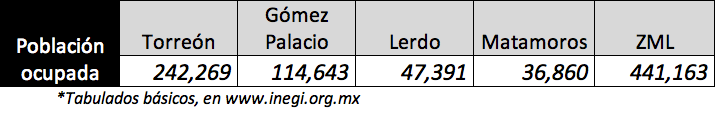
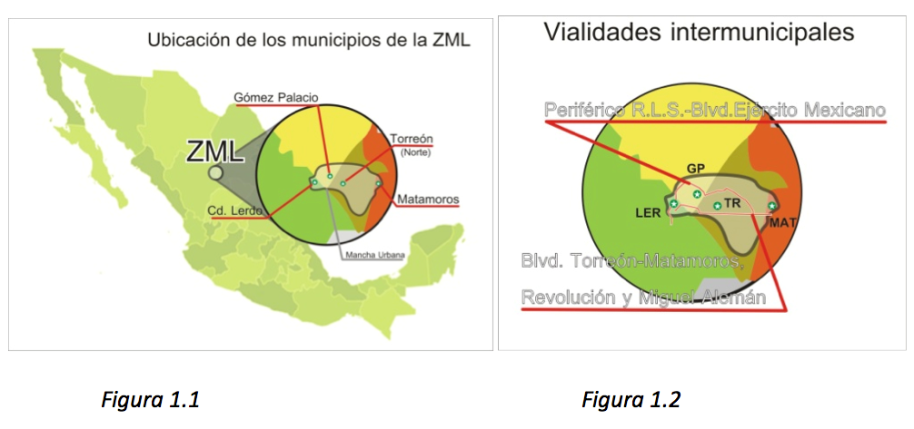
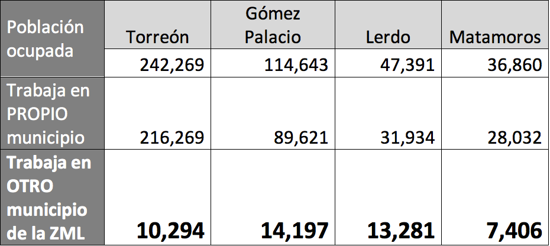
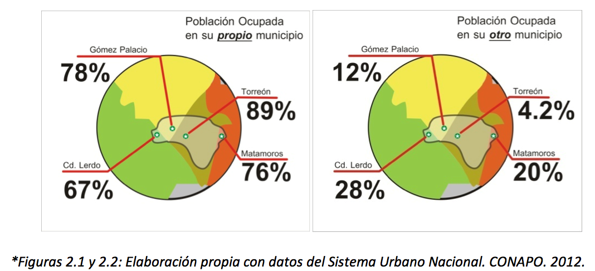
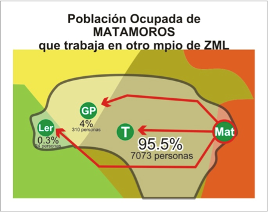
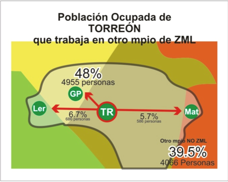
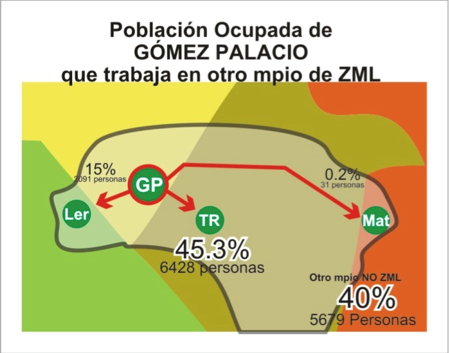
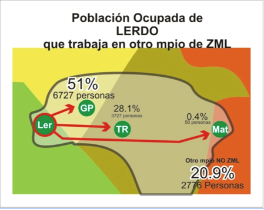

En una zona metropolitana en donde los límites municipales son divisiones imaginarias, en términos prácticos, para las necesidades de la población el traslado de una ciudad a otra es una realidad.
En cuestiones como la vivienda, el trabajo, el consumo, la educación y la oferta cultural, entre otras, analizar el flujo de personas de un municipio a otro se vuelve trascendental para comprender la dinámica metropolitana e indispensable para el diseño de políticas públicas eficientes. La movilidad cotidiana contempla la frecuencia de los traslados y en esta entrega analizaremos la movilidad con motivos laborales, que junto con las cuestiones educacionales abarca una gran parte de los viajes intermunicipales diarios propiciando fallas en los flujos de los sistemas viales en horas específicas (horas pico), sobretodo de las avenidas principales y zonas focalizadas de los municipios.
Cada municipio de la ZML tiene características particulares que aportan a la totalidad del conjunto metropolitano y que definen a la Comarca Lagunera. Esta no puede desarrollarse sin un trabajo conjunto y coordinado. La movilidad es una parte esencial del flujo dinámico de las zonas metropolitanas, por lo cual la interconexión de las zonas residenciales, comerciales e industriales que la integran debe partir de un enfoque integral, es decir, considerando las necesidades del todo, no solo de sus partes.
El desarrollo urbano de la ZML influye en los flujos dinámicos, desde la ubicación de los polos de desarrollo en los municipios de Torreón y Gómez Palacio, hasta la conectividad que proporciona el diseño de las vialidades principales.
Población Ocupada que tiene Trabajo en su Propio Municipio y Población Ocupada que tiene Trabajo en Otro Municipio de la ZML
¿Cuántas personas con trabajo tienen que trasladarse de su municipio de residencia a otro? La siguiente tabla nos clarifica en números, para después trabajar en porcentajes:
Los indicadores que muestran la proporción de la "Población Ocupada que tiene Trabajo en su Propio Municipio y que tiene Trabajo en Otro Municipio de la ZML" señalan una dinámica intermunicipal en vivienda y trabajo.
La excepción es Torreón con 4.2% de sus habitantes con la necesidad de trasladarse a algún municipio vecino para trabajar. Gómez Palacio con el 12% de su población ocupada tiene la necesidad de traslado, casi tres veces más que Torreón.
De los porcentajes anteriores, es indispensable conocer cuantas personas se trasladan de un municipio a otro y a cual municipio en específico para determinar la influencia de la colindancia entre los municipios.
   La cantidad de matamorenses que trabajan en Torreón es abrumadoramente mayor que en cualquier otro municipio. El 95% que representan 7,073 personas.
Gómez Palacio recibe 310 matamorenses, 4,955 torreonenses y 6,727 lerdenses. Torreón aporta trabajo para 7,073 matamorenses, 6,428 gomezpalatinos y 3,727 lerdenses.
Población ocupada que trabaja en otro municipio que NO forma parte de la ZML
Un dato importante es la cantidad de gomezpalatinos y torreonenses que trabajan en otros municipios que no forman parte de la ZML, ambos cercanos al 40%: Torreón con un 39.5% y Gómez Palacio con 40%, este fenómeno podría ser debido a la relevancia de ambas ciudades, que a pesar de no ser capitales, sus características económicas, demográficas y políticas obligan a que se tenga una relación en diferentes planos con las capitales de los estados, con otras ciudades importantes del país (sobre todo de la zona norte), con la capital de la República, e incluso con el extranjero.
El caso de Lerdo es contrastante ya que a pesar de tener un porcentaje considerable de población trabajando fuera de la ZML, la extensión de su territorio y la dispersión de sus localidades trasciende mas allá de la ZML ya sea para trabajo en zonas rurales o urbanas, como la ZM de Durango. Para Matamoros la población que trabaja fuera de su municipio y fuera de la ZML es mínima: 0.2%, es decir, la oferta de trabajo para sus habitantes se limita a lo que el propio municipio puede generar y lo que Torreón oferte.
La proporción de personas que trabajan y viven en el mismo municipio, a excepción de Torreón, muestra que ningún municipio de la ZML tiene la capacidad de ofrecer fuentes de trabajo a la totalidad de su población, lo cual se compensa con la interacción entre las demás ciudades de la ZML.
Observamos que Torreón, al situarse en la zona céntrica de la ZML beneficia a los municipios colindantes, destacando una proporción más alta de migración laboral cotidiana en relación a la ubicación más cercana o más lejana de Torreón. Lerdo al ubicarse a mayor distancia tiene un mayor porcentaje de población ocupada que trabaja en otro municipio, similar a Matamoros, aunque más acentuada.
De los porcentajes de la población ocupada que tienen la necesidad de trasladarse habrá que considerar a las personas que se trasladan a otros municipios que no forman parte de la ZML. Estos traslados son más largos y pueden realizarse partiendo de las Centrales de Autobuses, el Aeropuerto, las rutas suburbanas de transporte público, o en vehículo propio, y considerar también que no necesariamente se realizan todos los días laborales.